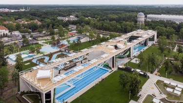

Debrecent fogom bemutatni
Debrecen egy gyönyörü város
Debrecenről egy facebook oldal
Látványoságok debrecenről
Debrecenben rengete látványoság van párat fel is sorolok
Debrecenről röviden
Debrecenben rengeted érdekeséget lehet megnézni ebből én csak párat mutattam.
Én debrecenben élek nagyon jó kis város.
Magyarország második legnagyobb városa Debrecen mert a legnagyobb Budapest.
Vannak Debrecenben fürdők meg egyéb dolgok is amiket meg kell látogatni.
Debrecenben van sok bicikli út ugyhogy tudtok menni biciklizni a haverokkal.